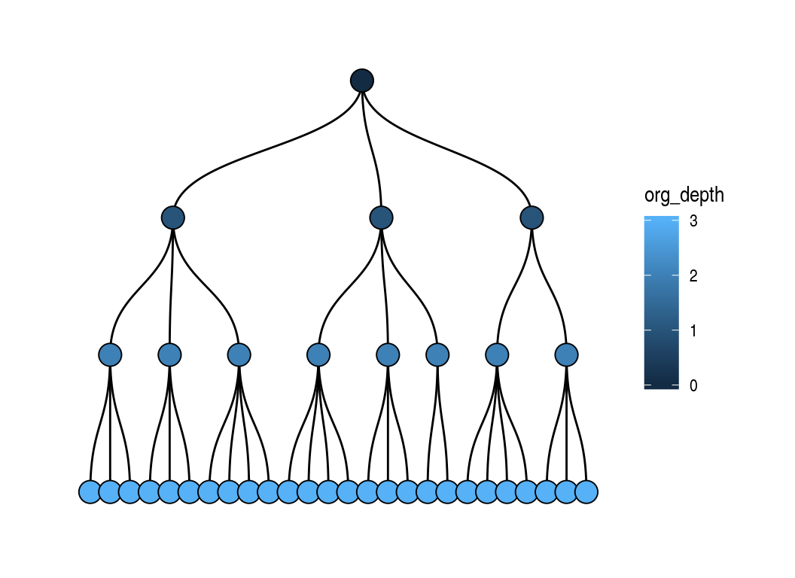
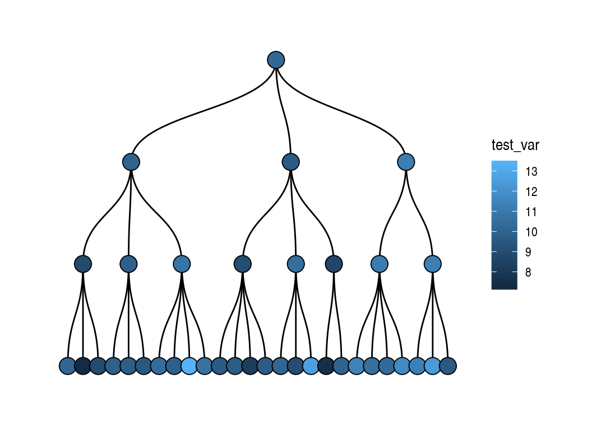
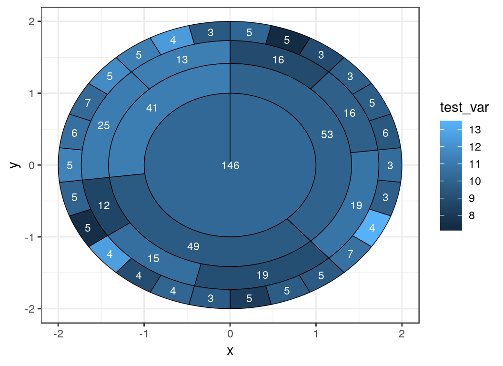

../vignettes/introduction_to_orgsurveyr.Rmd
introduction_to_orgsurveyr.RmdThis vignette introduces the general functionality of the orgsurveyr package and how it can be used to analyse and visualise organisational data. For a more detailed explanation of the ggraph and tidygraph packages are being used ‘under the hood’ please see the Organisations With ggraph vignette.
A realistic organisation can be simulated and plotted:
set.seed(1236)
tg2 <- create_realistic_org(n_children = 4, max_depth = 3, prob=0.3)
plot_org(tg2)
The orgsurveyr package uses the tidygraph and ggraph packages under the hood to provide functionality for HR analysts to easily analyse organisational data. The organisation simulated above is a tbl_graph object:
tg2
#> # A tbl_graph: 38 nodes and 37 edges
#> #
#> # A rooted tree
#> #
#> # Node Data: 38 x 2 (active)
#> unit_id org_depth
#> <chr> <int>
#> 1 1 0
#> 2 3 1
#> 3 4 1
#> 4 5 1
#> 5 10 2
#> 6 11 2
#> # ... with 32 more rows
#> #
#> # Edge Data: 37 x 2
#> from to
#> <int> <int>
#> 1 1 2
#> 2 1 3
#> 3 1 4
#> # ... with 34 more rowsThis is made up of two data frames, one for the nodes (organisational units) and another for the edges (the connections between the units). Importantly, note that the from/to columns in the edge data relate to the row number of the node and NOT the value of the unit_id column.
Although the convenience plot_org function is provided, users are advised to explore the full functionality of the ggraph package for their plots.
Individual level data also be simulated first by simulating the number of individuals in unit:
tg3 <- simulate_unit_size(tg2)
tg3
#> # A tbl_graph: 38 nodes and 37 edges
#> #
#> # A rooted tree
#> #
#> # Node Data: 38 x 4 (active)
#> unit_id org_depth is_leaf unit_size
#> <chr> <int> <lgl> <dbl>
#> 1 1 0 FALSE 3
#> 2 3 1 FALSE 2
#> 3 4 1 FALSE 3
#> 4 5 1 FALSE 3
#> 5 10 2 FALSE 3
#> 6 11 2 FALSE 2
#> # ... with 32 more rows
#> #
#> # Edge Data: 37 x 2
#> from to
#> <int> <int>
#> 1 1 2
#> 2 1 3
#> 3 1 4
#> # ... with 34 more rowsFollowed by simulating the individuals and any additional variables. The commands can be piped as per tidyverse convention:
tg3_individuals_df <- tg3 %>%
simulate_individuals_df() %>%
mutate(test_var2 = purrr::map_dbl(individual_id, ~rnorm(1, 20,3)))
tg3_individuals_df
#> # A tibble: 146 x 5
#> individual_id individual_name unit_id test_var test_var2
#> <chr> <chr> <chr> <dbl> <dbl>
#> 1 1 1_1 1 9.97 22.8
#> 2 2 1_2 1 16.0 22.0
#> 3 3 1_3 1 11.8 19.5
#> 4 4 3_1 3 13.0 26.3
#> 5 5 3_2 3 9.67 19.1
#> 6 6 4_1 4 12.5 18.5
#> 7 7 4_2 4 11.4 19.6
#> 8 8 4_3 4 12.0 16.8
#> 9 9 5_1 5 14.0 23.4
#> 10 10 5_2 5 13.2 20.4
#> # ... with 136 more rowsThe individual data can be aggregated at the unit level. This can be either be just those individuals associated with an organisational unit or (more usefully) a cumulative aggregation involving all individuals that are part of that unit and any units below it in the organisation:
summary_df <- calc_summary_df(tg=tg3, df=tg3_individuals_df,
selected_vars=c('test_var', 'test_var2'), is_cumulative=TRUE)
#> Using wide data frame format for individual variables
summary_df
#> # A tibble: 76 x 3
#> unit_id metric_id value
#> <chr> <chr> <dbl>
#> 1 1 test_var 10.2
#> 2 1 test_var2 20.3
#> 3 10 test_var 8.85
#> 4 10 test_var2 20.7
#> 5 11 test_var 9.84
#> 6 11 test_var2 20.1
#> 7 13 test_var 10.8
#> 8 13 test_var2 20.8
#> 9 14 test_var 9.03
#> 10 14 test_var2 19.4
#> # ... with 66 more rowsIf the is_cumulative flag is set to FALSE then the raw individual to unit mappings are used from the individual data:
tg3_individuals_df %>%
select(unit_id, individual_id) %>%
count(unit_id)
#> # A tibble: 38 x 2
#> unit_id n
#> <chr> <int>
#> 1 1 3
#> 2 10 3
#> 3 11 2
#> 4 13 2
#> 5 14 1
#> 6 16 3
#> 7 17 2
#> 8 18 2
#> 9 20 1
#> 10 3 2
#> # ... with 28 more rowsIf the is_cumulative flag is set to TRUE then the raw individual to unit mappings are generated from the generate_cumulative_mapping function leading to much higher group sizes:
generate_cumulative_mapping(tg3, tg3_individuals_df) %>%
count(parent_id)
#> # A tibble: 38 x 2
#> parent_id n
#> <chr> <int>
#> 1 1 146
#> 2 10 16
#> 3 11 16
#> 4 13 19
#> 5 14 19
#> 6 16 15
#> 7 17 12
#> 8 18 25
#> 9 20 13
#> 10 3 53
#> # ... with 28 more rowsFinally the aggregated data can be plotted as a dendrogram:
plot_org(tg3, fill_var = 'test_var', df = summary_df)
Or some other representation, such as a starburst plot, using generic tidygraph and ggraph functionality:
plot_data <- tg3_individuals_df %>%
inner_join(generate_cumulative_mapping(tg3, tg3_individuals_df), by='individual_id') %>%
group_by(parent_id) %>%
summarise(test_var = mean(test_var),
cumulative_group_size = n())
plot_tg <- tg3 %>%
activate(nodes) %>%
inner_join(plot_data, by=c('unit_id'='parent_id'))
ggraph(plot_tg, 'partition', circular = TRUE) +
geom_node_arc_bar(aes(fill = test_var), size = 0.25) +
geom_node_text(aes(label = cumulative_group_size), color = 'white', size = 3) +
theme_bw()
The following shiny apps are included in the orgsurveyr package:
test_viz - simulates an organisation with different characteristicsorgviz - permits visualisation of either simulated or real data as long as the data formats described in orgsurveyr-data-formats as used.Further information on using these is available in the Package Setup Vignette but to visualise the examples above we can just type the following command:
orgviz(tg=tg3, df=summary_df)